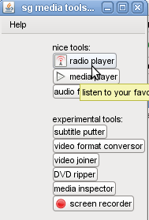

Sebastián Gurin's multimedia tools is a set of desktop applications related to multimedia file playing and formating. It is based on the great mplayer and written in java. Among other things you will find:
Caution: All of these applications where made to be used by
me at my home and are brought to you without any warranty. These are
not proffesional tools, so spect failures! However, they have showed to
work pretty well in most cases...
Why to use this? if you want
to have a lightweight set of
alternative tools, for playing all your sound and video format files,
easily do common conversion of sound and video formats, paste subtitle
to movies, listen internet radios and television, and other related
tasks, with a few clicks, easy to learn and to teach.
1) Make sure java is installed on the system. If not sure,
http://www.java.com.
Download and decompress file. Execute jmencoder\menu.bat. The windows release contains all required mplayer executables and plugins, so the user doesn't require to install anything additional. Only extract and run.
Make sure that mplayer is
installed in your system. Some tools like video or sound format
conversors will require also ffmpeg
installed.
In particular, the commands mplayer,
ffmpeg and mencoder must be in your PATH.
Executing jmencoder/menu will give you a menu like the following with links to all available applications:

TIP. The interface of these applications let you drag and drop your files. For example, in the media player application, you can drag a movie file to the player playlist and your subtitle file to the subtitle input box.
TODO: make desktop recordings in windows.
All these tools are based in the great mplayer project, so a lot of
credits are for mplayer's folks. These utilities are only GUI
applications interfacing with mplayer, done with java swing.
All java source code is included in the releases. If you want to build the program from source code yourself: